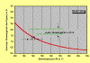
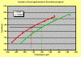
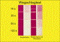

VERBLOCKEN VON DRUCKEN
|
Beim Verblocken von Drucken handelt es sich um
ein Zusammenhaften oder im Extremfall um ein
Verkleben von Druck- oder Falzbogen im
Auslagestapel aufgrund einer unzureichenden
Druckfarbentrocknung in Verbindung mit hohem
Stapeldruck. Die Druck- oder Falzbogen können
in der maschinellen Druckweiterverarbeitung nicht
mehr separiert werden, was zu kostenträchtigen
Produktionsausfallzeiten führt. Außerdem
können die Drucke aufgrund der
Verklebungserscheinungen störende Farbspuren
aufweisen (Abb. 1).
|
|
Abb. 1: Verblocken von Drucken.
|
|
|
|
Mögliche Ursachen:
|
|

|
|
Abb. 2: Verhältnis: Reduzierung des
Wassergehaltes im Papier bei Erhöhung der
Bahntemperatur.
|
|
|
|

|
|
Abb. 3: Beispiele unterschiedlicher Ergiebigkeit
von 2 verschiedenen Druckfarben.
|
|
|
|
|
|
Abb. 4: Verblocken beim Druck mit verschnittenen
Druckfarben.
|
|
|
|

|
|
Abb. 5: Vergleichende Wegschlagtests:
Skalendruckfarbe unverschnitten/Skalendruckfarbe
verschnitten.
|
|
|
|
|
|
Abb. 6: Verblocken von Rollenoffsetdrucken.
|
|
|
|
|
|
Abb. 7: Blocktestgerät.
|
|
|
|

|
|
|
|
|
|

|
|
|
|
|
|
|
Bogenoffset:
Das Wegschlagverhalten des Bedruckstoffes und/oder der
Druckfarbe hat einen großen Einfluss auf das
Verblocken. Bei zu langsamem Wegschlagverhalten verbleibt im
Moment des Kontaktes mit dem Folgebogen ein hoher Anteil der
noch nicht verfestigten Druckfarbe an der
Bedruckstoffoberfläche und wirkt wie eine adhesive
Schicht. Durch den steigenden Stapeldruck kommt es dann zu
einer Verfestigung (Verklebung) zwischen den
aufeinanderliegenden Bogen.
Wenn der oxidative Trocknungsprozess verzögert
abläuft, können ebenfalls
Verblockungserscheinungen auftreten.
Wird kein Druckbestäubungspuder oder ein Puder mit zu
geringer Korngröße eingesetzt, kann das zu
Verzögerungen der oxidativen Trocknung führen. Das
Druckbestäubungspuder gewährleistet einen gewissen
Abstand und somit den Einschluss von Sauerstoff zwischen den
bedruckten Bogen.
Der pH-Wert des Feuchtmittels spielt ebenfalls eine Rolle.
Sinkt der pH-Wert des Feuchtmittels unter 4,5 ist mit
Trocknungsverzögerungen zu rechnen.
Werden Zusatzstoffe der Druckfarbe, insbesondere
Trockenstoffe, nicht im richtigen Maß dosiert,
können Trocknungsverzögerungen und somit
Verblockungserscheinungen auftreten.
Das Emulgieren der Druckfarbe mit Feuchtmittel beeinflusst
die Trockenzeit. Bei übermäßig emulgierter
Druckfarbe resultieren Trocknungsverzögerungen und im
Extremfall Verblockungserscheinungen.
Wird beim Bedrucken von speziellen Papieren - z. B.
gussgestrichene Papiere - mit zu hohen Stapeln produziert,
steigt die Gefahr des Verblockens.
Bei der Lagerung von Drucken können durch partielle
Überbelastung, wie es beim Übereinanderstapeln von
Paletten vorkommen kann, Verblockungserscheinungen
auftreten.
Heat-set-Rollenoffset:
Im Rollenoffset kann eine Fehleinstellung der
Heißlufttrocknung, also zu niedrige Temperatur, oder
zu kurze Verweilzeit des Papiers in der Trocknungsstrecke
mangelnde Druckfarbentrocknung hervorrufen.
Dies gilt insbesondere für ungestrichene Papiere. Es
befinden sich in diesem Fall noch restliche Anteile von
nicht verflüchtigten Lösemitteln (Ölen) der
Druckfarbe im Papier. Durch die noch vorhandene Wärme
im Auslagestapel findet eine Diffusion der Öle und
somit wieder eine gewisse Erweichung des Druckfarbenfilmes
statt. Weiterhin können dann - bei Stangenauslage -
Verblockungserscheinungen durch den hohen Stapeldruck
entstehen
Beim Druck mit UV-Farben:
Bei ungestrichenen Papieren mit schnellem Wegschlagverhalten
schlagen die dünnflüssigen, reaktiven Bestandteile
der Druckfarbe und mit diesen auch die für die
Polymerisation verantwortlichen Photoinitiatoren in den
Bedruckstoff weg. Bei der anschließenden UV-Trocknung
kann dann die Druckfarbe aufgrund der Verarmung an
Photoinitiatoren und reaktiven Komponenten nicht
vollständig ausgehärtet werden. Die Druckfarbe
bleibt klebrig, was zum Verblocken führt.
Wenn der Anteil an Photoinitiatoren in der Druckfarbe zu
gering ist, kann ebenfalls keine ausreichende
Aushärtung erzielt werden.
Wenn die Strahlerleistung der UV-Trockner zu gering bzw.
partiell ungleichmäßig ist, ist unzureichende
Härtung der Druckfarbe die Folge.
Generell:
Die Farbschichtdicke hat einen weiteren Einfluss auf die
Druckfarbentrocknung. Je höher die Farbschichtdicke
ist, desto langsamer verläuft die Trocknung.
|
Mögliche Abhilfen:
|
|
Bogenoffset:
Im Bogenoffset ist grundsätzlich, um Verblocken zu
vermeiden, eine optimale Abstimmung der Kombination:
Druckfarbe/Papier dringende Voraussetzung. Dies kann am
besten in einem Druckversuch oder im Labor erfolgen. Auf
diese Art können gut verträgliche Kombinationen
ausgetestet und für zukünftige Aufträge
eingesetzt werden. Der Einsatz einer
„Standarddruckfarbe“ für alle Papiersorten
wäre zwar wünschenswert, Praxisergebnisse beweisen
allerdings immer wieder, dass dies nicht realistisch
ist.
Sofern der Drucker Einfluss auf die Wahl des Papiers hat,
sollten Papiere mit gutem Wegschlagverhalten eingesetzt
werden.
Ebenso sollten Druckfarben mit gutem Wegschlagverhalten
eingesetzt werden.
Achtung: Zu schnelles Wegschlagen hat Abmehlen (siehe dort)
zur Folge.
Zusatzstoffe oder Trockenstoffe müssen in der vom
Hersteller angegebenen Dosierung angesetzt werden.
Der pH-Wert des Feuchtmittels sollte nicht <4,5 sein.
Beim Bedrucken von Spezialpapieren (z. B. Transparentpapiere
oder Folien) ist es ratsam, sich in Gesprächen mit dem
Druckfarbenhersteller eine günstige Kombination aus
Druckfarbe, Zusatzstoffen und Feuchtmittel empfehlen zu
lassen.
Übermäßiges Emulgieren der Druckfarbe sollte
durch optimale Einstellung des
Druckfarbe/Feuchtmittel-Gleichgewichts vermieden werden. Bei
geringer Farbabnahme empfehlen sich Farbabnahmestreifen am
Rand der Druckform.
Wenn vorhanden, sollte im Bogenoffset mit IR-Trocknung
gedruckt werden. Die IR-Trocknung bewirkt durch
Viskositätsverminderung der Mineralöle
verbessertes Wegschlagen der Druckfarbe und durch die
Temperaturerhöhung im Stapel eine Beschleunigung des
oxidativen Trocknungsprozesses.
Beim Bedrucken von speziellen Papieren (z. B.
gussgestrichene Papiere) ist es empfehlenswert, niedrige und
dafür mehrere Stapel zu produzieren.
Bei der Lagerung von Drucken ist darauf zu achten, dass
keine partiellen Überbelastungen entstehen.
Rollenoffset:
Im Rollenoffset ist auf eine korrekte Einstellung der
Heißlufttrocknung zu achten, damit die Mineralöle
in der Druckfarbe in ausreichendem Maß verdampft
werden können (physikalische Trocknung). Es ist aber
dringend darauf zu achten, dass die Temperatur im Trockner
nicht zu hoch ist, da sonst andere Probleme, wie
Falzbrechen, Blasenbildung oder Faseraufrauung auftreten.
Aus Abb. 2 wird deutlich, dass eine Erhöhung der
Bahntemperatur von nur 5 °C eine Reduzierung des
Wassergehaltes im Papier um 0,5 % zur Folge haben kann. Wenn
man davon ausgeht, dass z. B. ein LWC-Papier mit einem
absoluten Wassergehalt von ca. 5 % angeliefert wird, dann
bedeuten 0,5 % bereits 10 % des gesamten Wassergehaltes.
Speziell bei ungestrichenen Papieren (z. B. SC-Papiere) hat
die Verweilzeit der Papierbahn in der Trockenstrecke einen
wesentlichen Einfluss auf die Druckfarbentrocknung. Im
Vergleich zu gestrichenen Papieren haben ungestrichene
Papiere einen wesentlich höheren Farbbedarf. Es
befindet sich also mehr Druckfarbe auf dem Papier. Um in
diesem Fall die Druckfarbe ausreichend trocknen zu
können, hilft meist nur die Verweilzeit des Papiers in
der Trockenstrecke zu verlängern, also die
Druckgeschwindigkeit zu reduzieren.
Weiterhin ist im Rollenoffset die Temperatur auf den
Kühlwalzen von Bedeutung. Die Abkühlung stellt im
Rollenoffset den 3. Schritt der Druckfarbentrocknung dar und
dient der Verfestigung des Druckfarbenfilms.
Beim Druck mit UV-Farben:
Beim Bedrucken von stark saugenden Materialien kann nur
empfohlen werden, durch entsprechende Vorversuche die
Aushärtung der Druckfarbe zu testen.
Die Strahlerleistung muss ausreichend hoch und
gleichmäßig sein. Die Reflektoren sollten
gereinigt, der Abstand zwischen Strahler und zu
härtender Oberfläche muss richtig eingestellt und
die Verweilzeit in der Aushärtungsstrecke ausreichend
lange sein.
Generell:
Übermäßig hohe Farbschichtdicken, die zu
Trocknungsverzögerungen führen, sind
reprotechnisch durch den Einsatz von UCR
(Unterfarbenreduzierung) zu vermeiden. Weiterhin empfiehlt
sich der Einsatz von Papieren und/oder Druckfarben mit hoher
Ergiebigkeit. Bei Druckfarben oder Papieren mit hoher
Ergiebigkeit können im Vergleich zu Materialien mit
geringerer Ergiebigkeit gleiche Farbdichten im Druck mit
geringerer Farbschichtdicke erzielt werden (Abb. 3).
|
Beispiel(e):
|
|
Verblocken beim Druck mit verschnittener
Druckfarbe:
Um beim Druck eines Autoprospektes eine möglichst
optimale Glanzbildung zu erzielen, wurde die Druckfarbe mit
einem Anteil von 20 % Drucklack verschnitten. Der
Schöndruck, auf dem sich Motive mit geringerer
Flächendeckung befanden, lief ohne Probleme. Auf der
Widerdruckseite befanden sich jedoch Motive mit hoher
Flächendeckung. Beim Widerdruck wurden im frisch
bedruckten Stapel erste Anzeichen von Ablegen in
farbintensiven Partien festgestellt. Nach einem Tag
verstärkte sich der Effekt derartig, dass die
Druckflächen zusammenklebten bzw. verblockten. Beim
Versuch, die Bogen zu separieren, wurde die
Papieroberfläche beschädigt; der Prospekt musste
als „nicht akzeptabel“ bezeichnet werden (Abb.
4).
Im FOGRA-Labor wurde das Wegschlagverhalten des Papiers
geprüft. Es ergab sich eine normal schnelle
Wegschlaggeschwindigkeit. Weiterhin fanden vergleichende
Wegschlagtests zwischen einer nicht verschnittenen
Skalendruckfarbe (Magenta) und einer verschnittenen (20 %
Drucklack) Skalendruckfarbe (Magenta) statt. Abb. 5 zeigt,
dass die nicht verschnittene Skalendruckfarbe normales
Wegschlagverhalten und die verschnittene Skalendruckfarbe
deutlich langsameres Wegschlagen aufweist.
Weiterhin zeigten die Probedrucke, dass unter Verwendung der
verschnittenen Druckfarbe im Vergleich zur nicht
verschnittenen Druckfarbe bei gleicher Farbmenge auf dem
Papier eine geringere Farbdichte erzielt wird. Dies
bedeutet, dass der Drucker, um die erforderliche
Färbung zu erzielen, mit erhöhter Farbgebung
drucken musste, was einen zusätzlich negativen Einfluss
auf das Verblocken ausübte. Insgesamt verursachte also
das verzögerte Wegschlagverhalten der verschnittenen
Druckfarbe in Verbindung mit den hohen Farbschichtdicken das
Verblocken der Drucke.
Verblocken im Heatset-Rollenoffset beim Bedrucken von
SC-Papier:
Eine Zeitungsbeilage mit farbintensiven Flächen wurde
4/4-farbig im Heatset-Rollenoffset gedruckt. Die
Druckgeschwindigkeit betrug lt. Angabe 12 m/s. Die Auflage
wurde inline gefalzt und geschnitten und in sog.
Stangenauslage abgelegt. Bei der Stangenauslage wird ein
Stapel von bedruckten Bogen (ca. 1 m Höhe) am oberen
und am unteren Ende mit Holzbrettern geschützt und mit
Stahlbändern verpresst. Dieser Vorgang dient zur
besseren Lagerung bzw. zum besseren Transport zur
Druckweiterverarbeitung.
In der Zeitungsdruckerei traten jedoch erhebliche Probleme
auf, da die bedruckten Bogen zum Einschießen in die
Tageszeitung nicht maschinell vom Stapel separiert werden
konnten. Die Drucke zeigten ein leichtes Aneinanderhaften.
Beim manuellen Separieren war ein deutliches
Trenngeräusch vernehmbar; eine Beeinträchtigung
der bedruckten Flächen war nicht erkennbar (Abb.
6).
Im FOGRA-Labor erfolgte zu Ursachenermittlung die
Herstellung von Probedrucken mit online Heatset-Trocknung
unter Verwendung der Auflagendruckfarben und des
Auflagenpapiers. Es fand dabei eine Variation mit
unterschiedlichen Verweilzeiten der frischen Drucke im
Heatset-Trockner statt. Unmittelbar nach dem Druck wurden
die Drucke einem Blocktest unterzogen. Beim Blocktest wird
ein kleiner Stapel (3 cm x 3 cm) unter definiertem
Anpressdruck verpresst (Abb. 7).
Die Ergebnisse zeigten, dass bei etwas längerer
Verweilzeit der Drucke in der Trockenstrecke kein Verblocken
erkennbar war. Bei der Standard-Verweilzeit von 1 s in der
Trockenstrecke traten dagegen Verblockungserscheinungen auf.
Es ist bekannt, dass SC-Papiere trotz einer relativ glatten
Oberfläche gegenüber LWC-Papieren einen wesentlich
höheren Farbbedarf haben. Es muss also, um eine
ausreichende Farbdichte zu erzielen, mit hoher Farbgebung
gedruckt werden. Beim SC-Papier penetriert ein hoher Anteil
der Druckfarbe in die Vertiefungen des Papiers. Bei einer
normal üblichen Verweilzeit von ca. 1 s in der
Trockenstrecke ist es dann nicht möglich, den gesamten
Mineralölanteil aus dem Papier auszudampfen.
Speziell bei der Stangenauslage herrscht dann im Stapel ein
hoher Anpressdruck und es findet im ca. 40 °C warmen
Stapel eine Diffusion der Öle und somit wieder eine
gewisse Erweichung des Druckfarbenfilmes statt, was zum
Verblocken führt. In diesem Fall bleibt dem Drucker nur
die unliebsame Möglichkeit, mit reduzierter
Druckgeschwindigkeit zu drucken, um die Verweilzeit in der
Trockenstrecke zu verlängern und damit das
Mineralöl in der Druckfarbe weitestgehend ausdampfen zu
können.
|
Allgemeine Hinweise:
|
|
Für den Reklamationsfall:
Druckausfallmuster sicherstellen.
Unbedruckte Papiermuster und unbedruckte Vergleichsmuster
sicherstellen (ca. 20 Blatt DIN A4). An diesen Mustern
können im Labor vergleichende Wegschlagtests,
Probedrucke, Trockenzeittests und Aushärtungsversuche
vorgenommen werden.
Druckfarbenproben (aus dem Farbkasten) und evtl.
Vergleichsfarben sicherstellen.
Zusatzstoffe bereitstellen.
Produktionsdaten protokollieren.
Ergänzende Literatur:
KUEN, T.; HUNDSDORFER, O.; STADLER, P.:
Anforderungen an den Trockenzustand von Druckfarbenschichten
für die Weiterverarbeitung in Buchbindereien und
Veredelungsbetrieben.
München: FOGRA, 1997 (73.008). - Forschungsbericht
PANTEL, G.:
Trocknung, Farbhaftung - Gutachtenfälle aus der
Praxis.
In: FOGRA-Sysmposium: Druckfarbe im Offset -
Möglichkeiten und Grenzen (1998), - Tagungsbericht
PANTEL, G.:
Verblocken im Endlosdruck - Praxisfälle aus
FOGRA-Gutachten.
In: Druck & Medien Magazin, Jg. 1 (2000), Nr. 18, S. 60
- 61
KUEN, T.; HUNDSDORFER, O.; STADLER, P.:
Wechselwirkungen zwischen Bedruckstoffen und Lacken im
Zusammenhang mit Matt/Glanzeffekten und Blockerscheinungen
nach der UV-Lackierung.
München: FOGRA, 2000 (73.003). - Forschungsbericht
|
|
|
|
|
|
|
Kontakt:
stadler@fogra.org
|
Ver-sta-200111
|